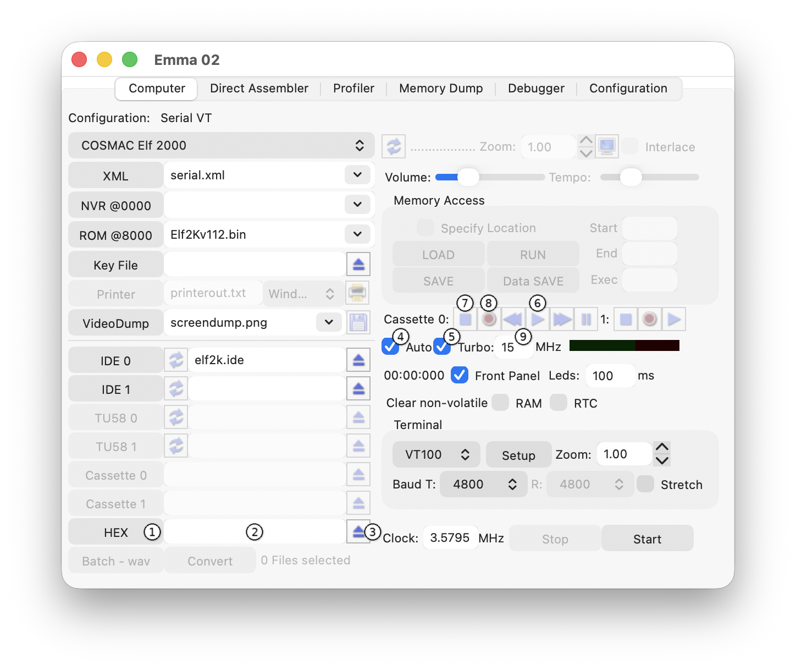

HEX or XMODEM file transfer is available when the selected XML file includes a HEX or XMODEM definition.
The main controls for HEX Support are shown in the screenshot below. The numbered markers in the screenshot correspond to the descriptions in this section.

A HEX file can be loaded in configurations such as COSMAC Elf 2000 (when using a terminal), CDP18S020 Evaluation Kit, Membership Card, and VIP2K Membership Card.
Press the HEX button (1) and select a file.
Result: The selected file is shown in the HEX text field (2).
Press the Eject button (3).
Result: The selected file is cleared.
Note: The default and simplest method is Auto file transfer (4). For faster transfer, select the Turbo checkbox (5).
Select File : Press the HEX button Start Transfer : Auto file transfer or press the Play or Record button Stop Transfer : Press the Stop button Turbo Mode : Enable for faster transfer
Clear the Auto checkbox (4).
apply all
Start a COSMAC Elf 2000 emulator.
Result: The COSMAC Elf 2000 monitor starts and shows the >>> prompt.
Press the Play button (6).
Result: HEX data is shown on the terminal window.
When the last line shows >>>:00000001FF, press RETURN; EOF is shown, indicating the end of the file.
Press the Stop button (7) to stop the transfer.
Clear the Auto checkbox (4).
Start a CDP18S020 Evaluation Kit emulator.
Press RETURN.
Result: The UT4 monitor starts and shows the * prompt.
Command: Type !M.
Press the Play button (6).
Result: Unreadable data is shown on the terminal window.
When terminal output stops, press the Stop button (7) to end the transfer.
Command: Type ?M<start> <length>.
Press the Record button (8) and then press RETURN.
Result: Output data is shown on the terminal window.
When terminal output stops, press the Stop button (7) to end the transfer.
HEX file transfer for the Membership Card and VIP2K Membership Card uses the monitor software. All files transferred via the monitor must be in Intel HEX format (.hex extension).
Important: Raw binary files (e.g., .ch8 or .bin) cannot be used directly. They must first be converted to Intel HEX format.
Start a Membership Card emulator.
Result: The Membership Card monitor starts and shows the > prompt.